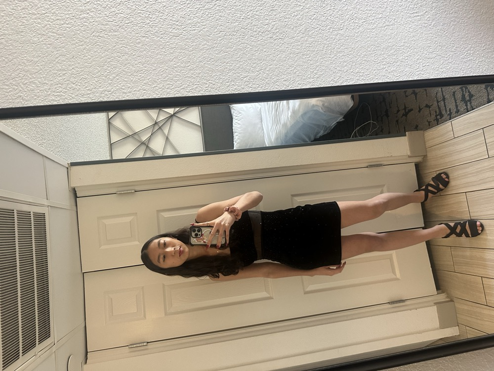

Nice to meet you! My name is Coralynn, and I'm originally from Southern California.
I'm a rising senior at Emory University and a second-year engineering intern at ActBlue. I'm also a competitive national college debater.
Outside of that, I'm a fan of solo puzzle games — you'll usually find me working through Bracket City, Clues by Sam, and Connections.
Feel free to reach out — I'd love to chat.